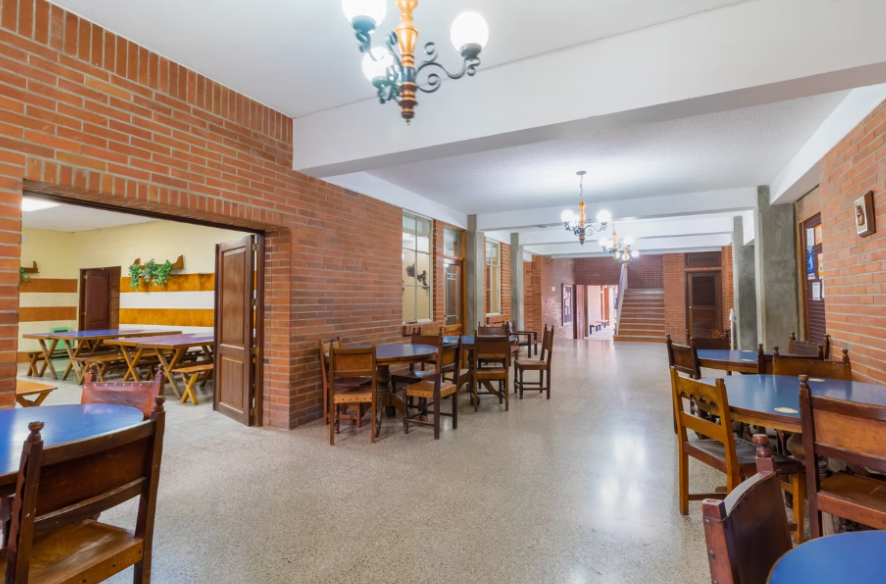
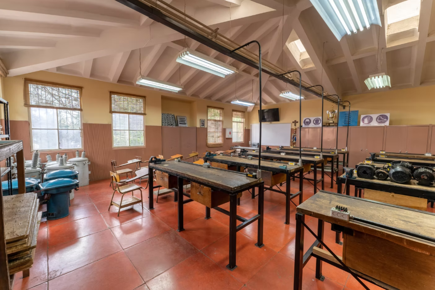
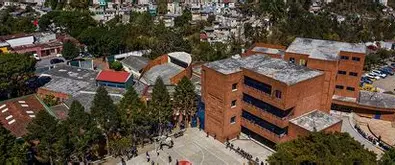
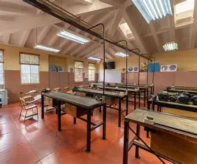
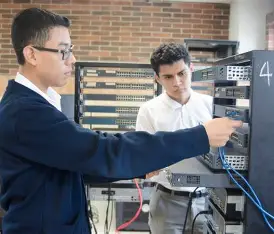

TU CAMINO AL ÉXITO ESTÁ EN KINAL
Kinal es un Centro Educativo privado, no lucrativo, dirigido a la formación técnica profesional de jóvenes y adultos, de beneficio colectivo y asistencia social en favor de los sectores más necesitados de la comunidad. Nuestro valor fundamental es enseñar a realizar el trabajo bien hecho, que sea la base de la superación de alumnos y el medio para servir a los demás.
Nuestra Historia
Fundado en 1972, Kinal ha formado generaciones de técnicos comprometidos con el desarrollo de Guatemala. Nuestro valor principal es enseñar el trabajo bien hecho, como base de la superación personal y el servicio a los demás.



Programas Educativos
Kinal ofrece su programa de Educación General Básica para todos aquellos jóvenes que buscan una orientación técnica y excelencia académica.
Especialidades Técnicas
Potenciamos tus habilidades con tecnología de vanguardia.
- Perito en Informática
- Electrónica Industrial
- Mecánica Automotriz
- Electricidad Industrial
- Diseño Gráfico



Galería Institucional
Conoce nuestras instalaciones



25k
Escuela Técnica
1500
Ciclo Básico
6k
Diversificado
+32k
Total Beneficiados
Nuestro Blog Informativo
Contáctanos
Correos Electrónicos
infocet@kinal.org.gt
infobas@kinal.org.gt
infoets@kinal.org.gt
Bolsa de empleos
empleos@kinal.edu.gt
Ubicación
6 avenida 13-54 zona 7, Colonia Landívar, Ciudad de Guatemala
Justificación del Rediseño
Hice este rediseño para que la página se vea más actual y fácil de entender. Ahora todo está mejor organizado y es más cómoda de usar que la versión anterior.